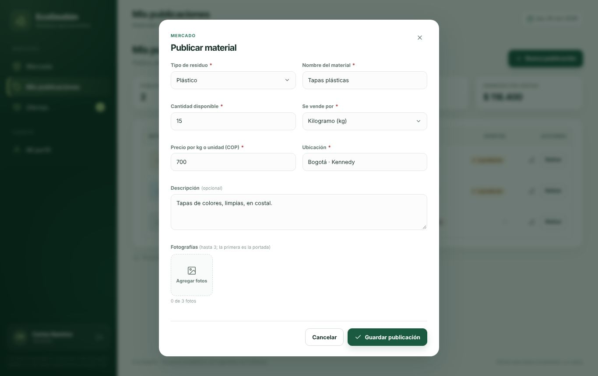
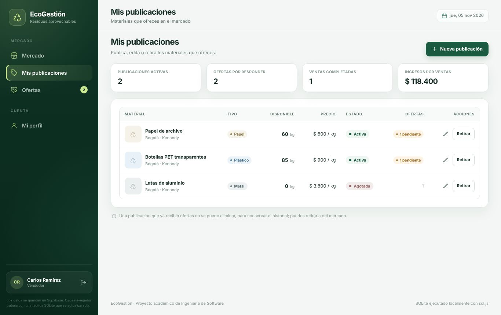
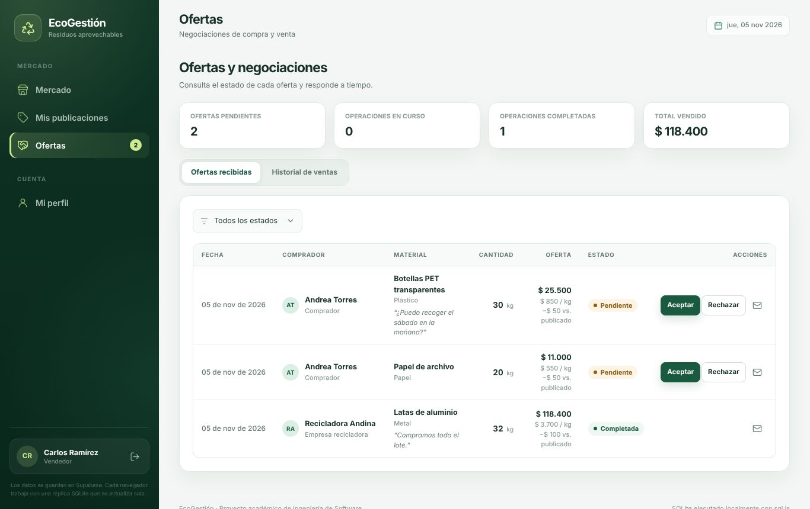
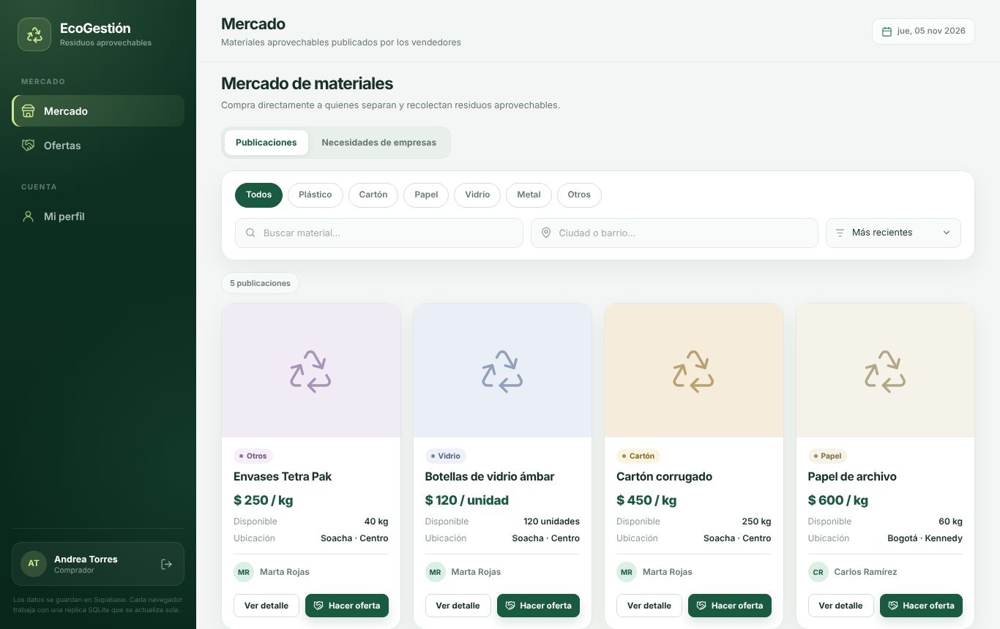
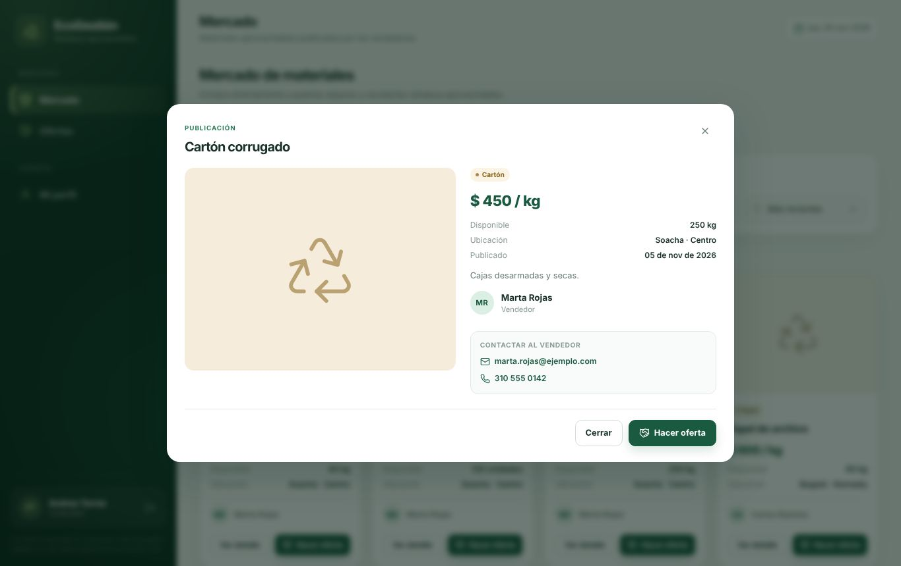
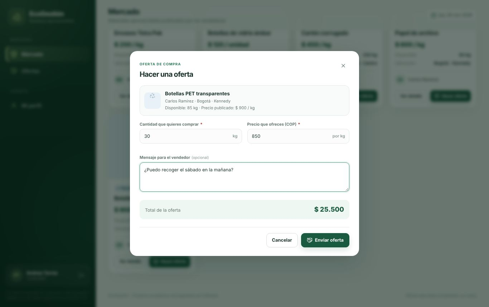
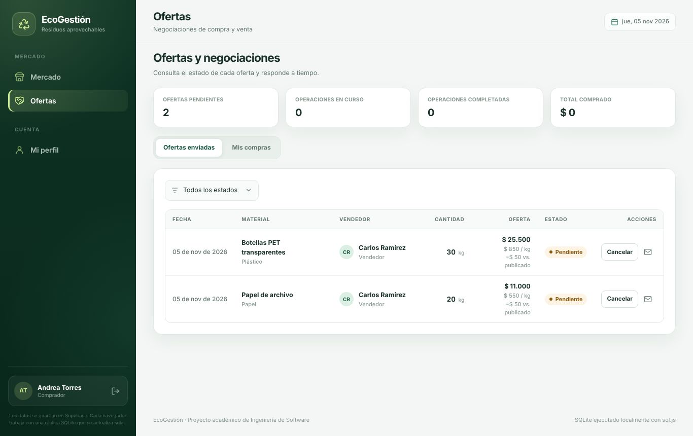
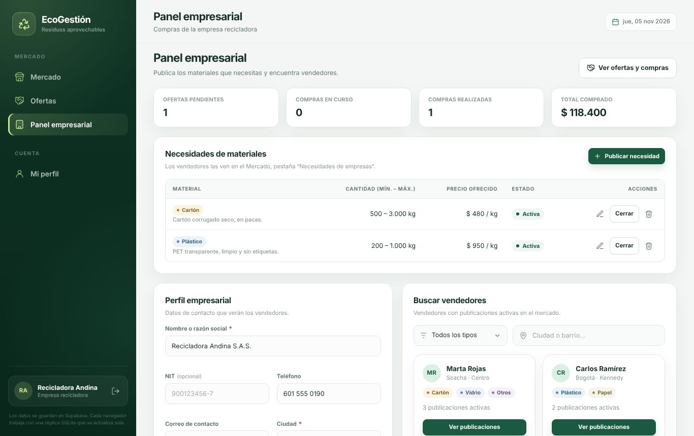
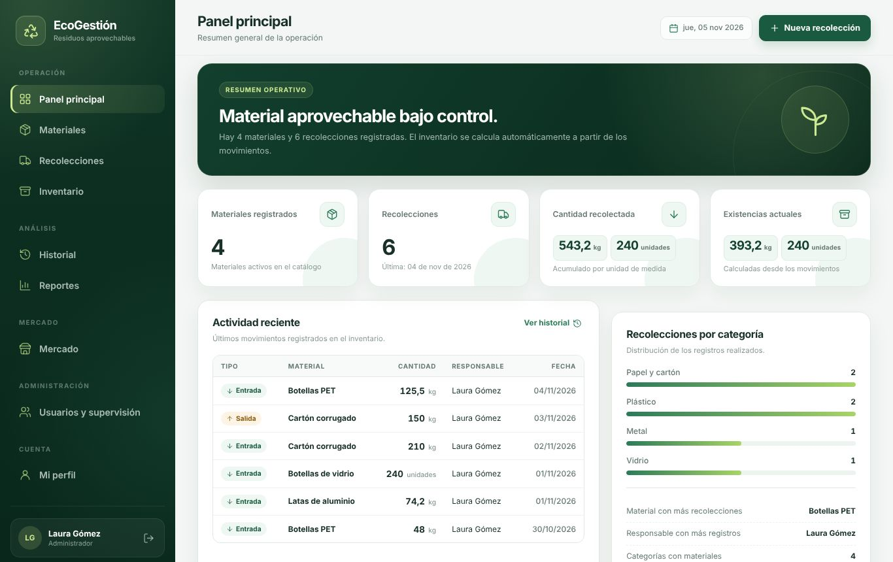
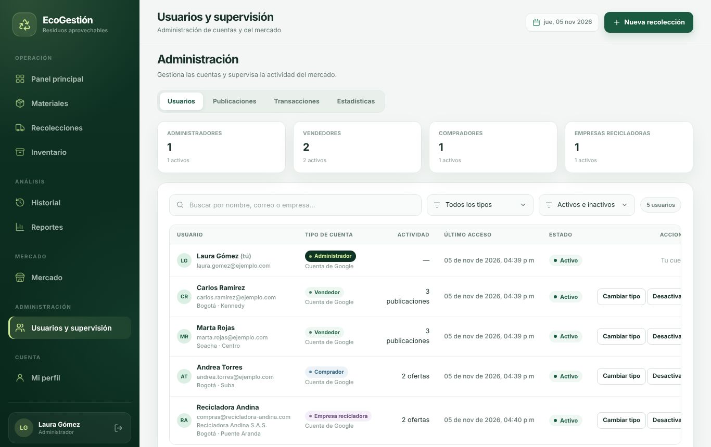

Antes de empezar
Solo necesitas tres cosas:
- Una cuenta de Google (la misma de Gmail). EcoGestión no usa contraseñas propias.
- Un navegador actualizado: Chrome, Edge, Firefox o Safari, en computador o celular.
- Conexión a Internet. Todo lo que registras se guarda en línea y lo ven las demás personas del mercado.
No hay que instalar nada. La dirección es ryuuga-code.github.io/EcoGestion.
Entrar por primera vez
- Abre EcoGestión y pulsa Continuar con Google.
- Elige tu cuenta de Google en la ventana que se abre y acepta compartir tu nombre, correo y foto.
- Completa tu registro (solo la primera vez): elige el tipo de cuenta, escribe tu ciudad y barrio y, si quieres, un teléfono para que te contacten.
- Pulsa Crear cuenta. Llegarás al Mercado.

¿Qué tipo de cuenta elijo?
Separas o recolectas material (botellas, cartón, latas…) y quieres venderlo.
Compras material a la población, por ejemplo para tu chatarrería o tu bodega de reciclaje.
Representas una empresa que compra material por volumen para transformarlo.
El tipo de cuenta no se puede cambiar por tu cuenta. Si te equivocaste, pídele a un administrador que lo cambie.
Si vendes residuos
Publicar un material
- En el menú, entra a Mis publicaciones y pulsa Nueva publicación.
- Elige el tipo de residuo (Plástico, Cartón, Papel, Vidrio, Metal u Otros) y escribe un nombre claro, por ejemplo “Botellas PET transparentes”.
- Indica la cantidad disponible, si vendes por kilogramo o por unidad, y el precio en pesos.
- Revisa la ubicación (se llena con la de tu perfil) y agrega una descripción: cómo está separado, si está limpio, horarios para recoger.
- Agrega hasta 3 fotos. La primera será la portada. Fotos claras con buena luz reciben más ofertas.
- Pulsa Guardar publicación. Aparecerá en el Mercado para todos.


Administrar tus publicaciones
En Mis publicaciones ves todo lo que ofreces, cuántas ofertas tiene cada una y tus ventas.
- Editar (lápiz): cambia precio, cantidad, fotos o descripción.
- Retirar: la publicación deja de verse en el Mercado. Las ofertas pendientes se rechazan solas. Puedes Reactivarla después.
- Eliminar (papelera): solo aparece si nadie ha ofertado todavía.


Responder ofertas y cerrar una venta
- Cuando alguien te hace una oferta, aparece un número junto a Ofertas en el menú.
- En Ofertas recibidas ves quién oferta, cuánto pide, a qué precio y su mensaje.
- Pulsa Aceptar o Rechazar. Al aceptar, esa cantidad se descuenta de tu publicación para que nadie más la compre.
- Usa el botón del sobre para ver el correo y el teléfono del comprador y coordinar la entrega.
- Cuando entregues el material y recibas el pago, pulsa Marcar completada. La venta pasa a tu Historial de ventas.


Si una oferta pide más de lo que te queda, EcoGestión no te dejará aceptarla. Recházala o edita la cantidad de tu publicación.
Si compras residuos
Buscar material
En Mercado ves todo lo que está a la venta. Puedes filtrar por:
- Tipo de residuo, con los botones de arriba.
- Nombre, en el buscador.
- Ciudad o barrio, para encontrar material cerca.
- Orden: más recientes, menor o mayor precio, mayor cantidad.


Pulsa Ver detalle para ver las fotos, la descripción y los datos de contacto del vendedor (correo y teléfono).


Hacer una oferta
- Pulsa Hacer oferta en la publicación.
- Escribe la cantidad que quieres (no puede ser mayor que la disponible) y el precio que ofreces. Viene sugerido el precio publicado, pero puedes proponer otro.
- Agrega un mensaje si quieres, por ejemplo el día en que puedes recoger. El total se calcula solo.
- Pulsa Enviar oferta.


Seguir tus negociaciones
En Ofertas ves el estado de cada oferta enviada y, en Mis compras, las operaciones cerradas. Mientras una oferta esté Pendiente, puedes cancelarla. Solo puedes tener una oferta pendiente por publicación.


Si eres una empresa recicladora
Tienes todo lo de un comprador y además un Panel empresarial:
- Perfil empresarial: nombre de la empresa, NIT, teléfono, correo, dirección y ciudad. Es lo que verán los vendedores.
- Necesidades de materiales: publica qué compras, en qué cantidades (mínima y máxima) y a qué precio. Los vendedores las ven en el Mercado, en la pestaña Necesidades de empresas, y te pueden contactar.
- Buscar vendedores: filtra por tipo de residuo o ubicación y pulsa Ver publicaciones para ver solo lo de ese vendedor.
- Resumen de compras: ofertas pendientes, compras en curso, compras realizadas y total comprado.


Cuando ya no necesites un material, usa Cerrar en esa necesidad. Puedes reabrirla cuando quieras.
Estados de una oferta
Toda oferta pasa por estos estados. EcoGestión no permite saltos distintos a los que se muestran.
| Estado | Qué significa | Quién lo cambia |
|---|---|---|
| Pendiente | La oferta espera respuesta. | El vendedor la acepta o la rechaza; el comprador puede cancelarla. |
| Aceptada | Hay un acuerdo. La cantidad se descontó de la publicación. | El vendedor la marca como completada. Cualquiera de los dos puede cancelarla, y entonces la cantidad vuelve a la publicación. |
| Completada | El material se entregó y se pagó. | Estado final. |
| Rechazada | El vendedor no aceptó, o retiró la publicación. | Estado final. |
| Cancelada | Una de las partes desistió. | Estado final. |
Tu perfil y cerrar sesión
Pulsa tu nombre en la parte de abajo del menú o entra a Mi perfil. Ahí ves tu tipo de cuenta y lo que puedes hacer, y puedes cambiar tu teléfono y tu ciudad y barrio. El nombre, el correo y la foto vienen de Google.

Para cerrar sesión, pulsa el botón de salida junto a tu nombre o Cerrar sesión en tu perfil. Hazlo siempre que uses un computador compartido.
Para administradores
Las cuentas de administrador manejan además el centro de acopio y la supervisión del mercado:
- Panel principal, Materiales, Recolecciones, Inventario, Historial y Reportes: registran lo que entra y sale del centro de acopio. El inventario se calcula solo y los reportes se exportan a CSV (Excel).
- Usuarios y supervisión: activar o desactivar cuentas, cambiar el tipo de cuenta, ver todas las publicaciones y negociaciones, y ver estadísticas.
- El recuadro Base de datos de la barra lateral muestra la última actualización y permite Sincronizar o descargar una Copia.




Una cuenta desactivada no puede entrar y sus publicaciones dejan de verse, pero su historial se conserva. Siempre debe quedar al menos un administrador activo.
Desde el celular

EcoGestión se adapta a la pantalla del celular. El menú se abre con el botón de tres líneas, arriba a la izquierda.
Para tenerlo a mano como una aplicación, en Chrome abre el menú (⋮) y elige Agregar a la pantalla principal.
Preguntas frecuentes
No me aparece lo que publicó otra persona
La información se actualiza sola cada 30 segundos y cada vez que haces algo. Si tienes prisa, recarga la página.
Google me dice “Acceso bloqueado”
Mientras el sistema está en etapa de pruebas, solo pueden entrar los correos autorizados. Pídele al administrador que agregue el tuyo.
Me sale “Esta cuenta está desactivada”
Un administrador desactivó tu cuenta. Comunícate con él para que la active.
¿Puedo cambiar el precio después de publicar?
Sí, con el lápiz en Mis publicaciones. Las ofertas ya enviadas conservan el precio que propuso el comprador.
¿Por qué no puedo eliminar una publicación?
Porque ya recibió ofertas, y su historial debe conservarse. Usa Retirar para que deje de verse.
¿EcoGestión cobra comisión o procesa pagos?
No. EcoGestión pone en contacto a las partes y registra el acuerdo. La entrega y el pago se coordinan directamente entre comprador y vendedor.
¿Por qué me pide unidades enteras?
Cuando un material se vende por unidad (por ejemplo, botellas de vidrio), la cantidad debe ser un número entero. Si se vende por kilogramo, puedes usar decimales.
Me dice “Tu sesión venció”
Por seguridad las sesiones caducan. Vuelve a pulsar Continuar con Google.
Tus datos y tu privacidad
- EcoGestión recibe de Google solo tu nombre, tu correo y tu foto. Nunca ve ni guarda tu contraseña.
- Tu nombre, correo, teléfono y ubicación los pueden ver las demás personas registradas, porque son necesarios para contactarse en el mercado. Si no quieres compartir tu teléfono, déjalo vacío.
- La información se guarda en un servidor protegido. Cada persona solo puede modificar lo suyo.
- Si quieres dejar de usar EcoGestión o que se eliminen tus datos, escríbele al administrador del sistema.